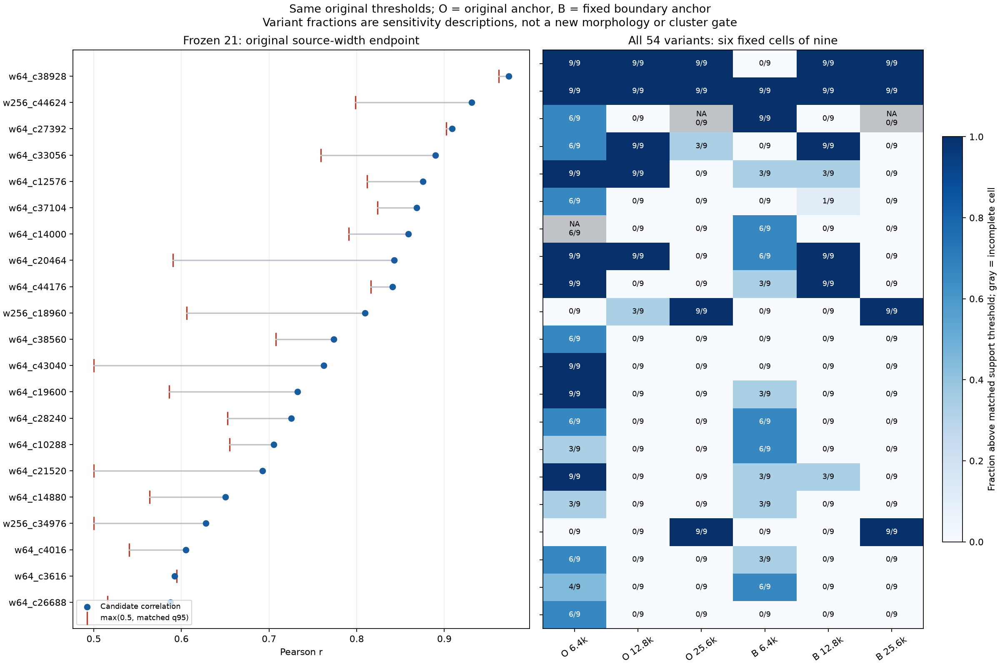
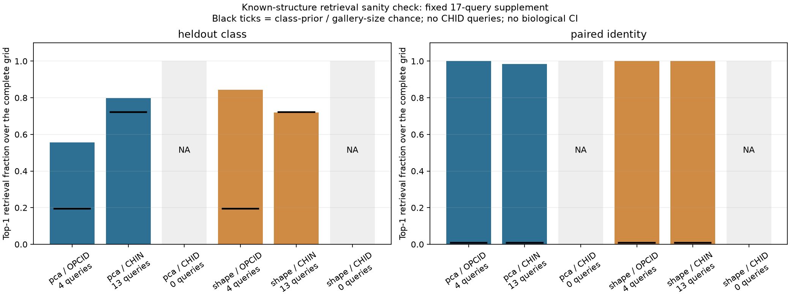
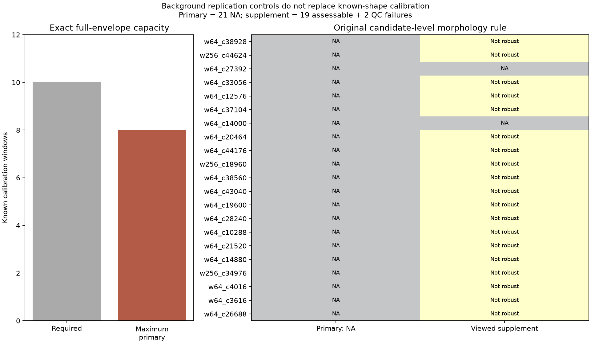

这次使用全21候选完整扰动足迹排除、对照之间完整足迹不相交；因此是更严格对照队列下的开发性重核，不覆盖历史结果。54变体属于相同位置的敏感性分析，不能增加独立样本量。
原形态校准在相同空间和质量规则下，最大容量仅8个；10个的门槛不变，主形态端点继续NA。匹配背景对照用于重复性，不能填入已知形态校准。探索补充仅19例可评价，完整21例端点仍NA，未确认新类型。
21例汇总 · 六组尺度证据 · 全部54变体 · 冻结匹配关系 · 对照冻结 · 核验摘要

| 候选 | 基线有效对照 | 相关性 | 阈值 | 余量 | 基线支持 | 全部变体支持/可评估 | 主形态 | 补充稳健异常 |
|---|---|---|---|---|---|---|---|---|
| w64_c38928 | 20 | 0.9736 | 0.9621 | 0.0115 | True | 45/54 (+0 NA) | NA | False |
| w256_c44624 | 20 | 0.9314 | 0.7986 | 0.1327 | True | 54/54 (+0 NA) | NA | False |
| w64_c27392 | 20 | 0.9090 | 0.9021 | 0.0069 | True | 15/36 (+18 NA) | NA | NA |
| w64_c33056 | 20 | 0.8896 | 0.7588 | 0.1308 | True | 27/54 (+0 NA) | NA | False |
| w64_c12576 | 20 | 0.8756 | 0.8118 | 0.0637 | True | 24/54 (+0 NA) | NA | False |
| w64_c37104 | 20 | 0.8686 | 0.8239 | 0.0447 | True | 7/54 (+0 NA) | NA | False |
| w64_c14000 | 20 | 0.8588 | 0.7907 | 0.0681 | True | 12/51 (+3 NA) | NA | NA |
| w64_c20464 | 20 | 0.8426 | 0.5905 | 0.2521 | True | 33/54 (+0 NA) | NA | False |
| w64_c44176 | 20 | 0.8406 | 0.8162 | 0.0245 | True | 21/54 (+0 NA) | NA | False |
| w256_c18960 | 20 | 0.8095 | 0.6061 | 0.2034 | True | 21/54 (+0 NA) | NA | False |
| w64_c38560 | 20 | 0.7736 | 0.7076 | 0.0660 | True | 6/54 (+0 NA) | NA | False |
| w64_c43040 | 20 | 0.7626 | 0.5000 | 0.2626 | True | 9/54 (+0 NA) | NA | False |
| w64_c19600 | 20 | 0.7324 | 0.5860 | 0.1465 | True | 12/54 (+0 NA) | NA | False |
| w64_c28240 | 20 | 0.7253 | 0.6525 | 0.0728 | True | 12/54 (+0 NA) | NA | False |
| w64_c10288 | 20 | 0.7053 | 0.6548 | 0.0504 | True | 9/54 (+0 NA) | NA | False |
| w64_c21520 | 20 | 0.6927 | 0.5000 | 0.1927 | True | 15/54 (+0 NA) | NA | False |
| w64_c14880 | 20 | 0.6502 | 0.5639 | 0.0863 | True | 6/54 (+0 NA) | NA | False |
| w256_c34976 | 20 | 0.6279 | 0.5000 | 0.1279 | True | 18/54 (+0 NA) | NA | False |
| w64_c4016 | 20 | 0.6049 | 0.5402 | 0.0647 | True | 9/54 (+0 NA) | NA | False |
| w64_c3616 | 20 | 0.5923 | 0.5946 | -0.0023 | False | 10/54 (+0 NA) | NA | False |
| w64_c26688 | 20 | 0.5874 | 0.5158 | 0.0717 | True | 6/54 (+0 NA) | NA | False |
固定原8个及补充17个已知查询，按同一54变体检索。空间留出类别检索排除自身和重叠足迹，并与类别先验比较；跨WT同ID检索另报告真实配对位置能否排到前列。两项均不用于调整候选门槛，且没有CHID查询，不能认证全部三类的形态辨识。

每个已知查询54变体汇总 · 分类别检索汇总 · 全量排名

原主校准最大容量证明 · 全部合格校准候选 · 主形态汇总 · 探索补充汇总 · 产物哈希
既有WT和区域已被查看，本次不是独立外部确认。实际读取现存100 bp缓存，未训练或扫描原始10 bp全基因组。